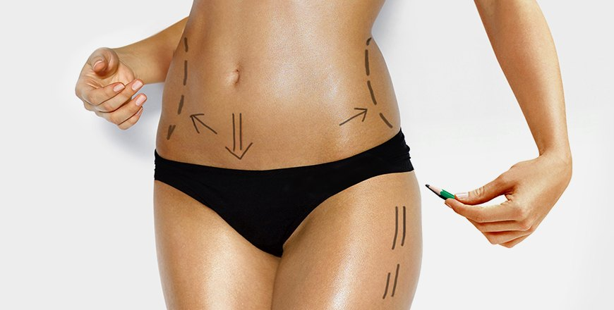

Realizamos cirugías diarias por la mañana y por la tarde. Llame a la consulta o reserve una cita en línea.
Somos un centro de atención médica primaria que se ocupa de todos los aspectos de la atención médica.
Naturalmente, nos especializamos en áreas importantes para los estudiantes: salud sexual, salud mental,
medicina de viaje, etc. Si es necesario, podemos remitirlo a especialistas u otras fuentes de ayuda.
AGENDA TU CITA
Dependiendo del tipo exacto de cirugía, se requiere un tipo específico de especialista. Por ejemplo, una
rinoplastia cerrada puede requerir un otorrinolaringólogo de rinoplastia abierta (especialista en oído, nariz
y garganta). A veces se necesita un cirujano maxilofacial (especialista en mandíbula, rostro y cuello) para
crear una nariz funcional, estética y facialmente proporcionada.
En cualquier caso, el objetivo principal de cualquier cirugía rinoplástica, ya sea cosmética (buscada solo
con fines estéticos) o reconstructiva (la que reparará cualquier tipo de daño o defecto causado por
enfermedad) es realizar la forma y función de la parte del cuerpo (en este caso de la nariz) para estar
intacta y agradable para el paciente!
AGENDA TU CITA
Solo eche un vistazo a sus opciones de cirugía de estiramiento facial y compruebe lo fácil y rápido que puede
hacer estos ajustes cruciales y lo asequible que es detener el proceso de envejecimiento durante algún tiempo
...
Para comprender mejor sus opciones y el momento oportuno, asegúrese de detectar los primeros signos del
envejecimiento. Pueden servir como una alerta rápida de que necesita someterse a la cirugía de estiramiento
facial ahora mismo:
-
Pliegues debajo de los ojos, en las comisuras de la boca, debajo de la nariz
-
Pérdida del tono de piel.
-
Piel flácida y / o exceso de grasa
AGENDA TU CITA

Si bien el envejecimiento humano es un proceso completamente natural, con la ayuda oportuna de la cirugía
estética moderna podemos alterar fácilmente sus efectos.
AGENDA TU CITA

Muchas personas tienen áreas de células grasas que no desaparecen, no importa cuán estricta sea la dieta que
sigan o cuán exigente y exhaustiva sea su rutina de ejercicios…. Las áreas más comunes de estas bolsas de
grasa incluyen:
- Area del pecho
- Parte superior de los brazos
- Abdomen y cintura
- Espalda
- Mejillas, mentón y cuello
AGENDA TU CITA
La terapia celular (también llamada terapia celular o citoterapia) es una terapia en la que se inyecta
material celular en un paciente; [1] esto generalmente significa células vivas intactas. Por ejemplo, las
células T capaces de combatir las células cancerosas a través de la inmunidad mediada por células pueden
inyectarse en el curso de la inmunoterapia.
AGENDA TU CITA


{kind=link}
{kind=link}
{kind=link}
{kind=link}
{kind=link}